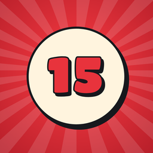
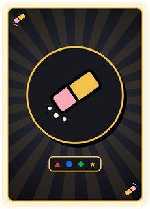

FIFTEEN · Account

Eliminazione accountPuoi eliminare il tuo account in ogni momento, dal gioco: Impostazioni > Privacy e account > Eliminazione account > «Elimina account» (oppure Profilo > Elimina profilo).
Verranno cancellati subito l'account online, il profilo, il punteggio e la posizione in classifica, gli amici e le richieste, e su questo dispositivo nome, colore e statistiche. Non si può annullare.
Se non hai più il gioco installato, chiedi l'eliminazione al contatto: rutakoulab@gmail.com.
Account deletion
You can delete your account at any time, from the game: Settings > Privacy and account > Account deletion > "Delete account" (or Profile > Delete profile).
This deletes at once the online account, the profile, the rating and leaderboard place, friends and requests, and on this device the name, colour and statistics. It cannot be undone.
If the game is no longer installed, ask the contact to delete it: rutakoulab@gmail.com.
Eliminar la cuenta
Puedes eliminar tu cuenta cuando quieras, desde el juego: Ajustes > Privacidad y cuenta > Eliminar la cuenta > «Eliminar cuenta» (o Perfil > Eliminar perfil).
Se borran al momento la cuenta en línea, el perfil, la puntuación y el puesto en la clasificación, los amigos y las solicitudes, y en este dispositivo el nombre, el color y las estadísticas. No se puede deshacer.
Si ya no tienes el juego instalado, pide la eliminación al contacto: rutakoulab@gmail.com.
Suppression du compte
Tu peux supprimer ton compte à tout moment, depuis le jeu : Réglages > Confidentialité et compte > Suppression du compte > « Supprimer le compte » (ou Profil > Supprimer le profil).
Sont effacés aussitôt le compte en ligne, le profil, le score et la place au classement, les amis et les demandes, et sur cet appareil le nom, la couleur et les statistiques. C'est définitif.
Si le jeu n'est plus installé, demande la suppression au contact : rutakoulab@gmail.com.
Konto löschen
Du kannst dein Konto jederzeit im Spiel löschen: Einstellungen > Datenschutz und Konto > Konto löschen > „Konto löschen“ (oder Profil > Profil löschen).
Sofort gelöscht werden das Online-Konto, das Profil, Wertung und Ranglistenplatz, Freunde und Anfragen, und auf diesem Gerät Name, Farbe und Statistiken. Das lässt sich nicht rückgängig machen.
Wenn das Spiel nicht mehr installiert ist, bitte den Kontakt um die Löschung: rutakoulab@gmail.com.
删除账号
你可以随时在游戏中删除账号：设置 > 隐私与账号 > 删除账号 >“删除账号”（或 资料 > 删除资料）。
这会立即删除在线账号、资料、积分和排行榜名次、好友和请求，以及本设备上的名字、颜色和统计。无法撤销。
如果你已不再安装游戏，请通过联系方式申请删除：rutakoulab@gmail.com。